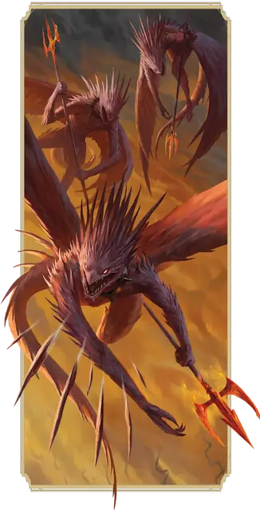

Игольчатый дьявол (спинагон)
Spined Devil
Маленькое Исчадие (Дьявол), Принципиальное Злое

Класс Защиты 13 Инициатива +2 (12)
Хиты 45 (10к6 + 10)
Скорость 20 футов, Полёта 40 футов
| мод | спас | ||
|---|---|---|---|
| СИЛ | 10 | +0 | +0 |
| ЛОВ | 15 | +2 | +2 |
| ТЕЛ | 12 | +1 | +1 |
| мод | спас | ||
|---|---|---|---|
| ИНТ | 11 | +0 | +0 |
| МДР | 14 | +2 | +2 |
| ХАР | 8 | −1 | −1 |
Сопротивление урону Холод
Иммунитеты Огонь, Яд; Отравленный
Чувства Тёмное зрение 120 футов (игнорирует магическую Темноту), пассивное Восприятие 12
Языки Инфернальный, Телепатия 120 фт.
Опасность 2 (450 опыта; БВ +2)
Особенности
Облёт. Игольчатый дьявол не вызывает Провоцированных атак, когда вылетает из вражеской досягаемости.
Сопротивление магии. Игольчатый дьявол совершает с Преимуществом спасброски от заклинаний и прочих магических эффектов.
Действия
Мультиатака. Дьявол совершает две атаки Дьявольскими вилами или Хвостовой иглой в любой комбинации.
Дьявольские вилы. Бросок рукопашной атаки: +4, досягаемость 5 фт. Попадание: 5 (1к6 + 2) Колющего урона плюс 3 (1к6) урона Огнём.
Хвостовая игла. Бросок дальнобойной атаки: +4, дистанция 20/80 фт. Попадание: 4 (1к4 + 2) Колющего урона плюс 3 (1к6) урона Огнём.
Бонус мастерства +2
Среда обитания Девять преисподних
Сокровища Отсутствуют
Игольчатый дьявол
Дьявол навязчивости и подозрительности
Игольчатые дьяволы (также известные как спинагоны) рыщут в тенях Нижних планов, разнюхивая секреты для своих дьявольских повелителей. Они предпочитают нападать сверху, метая острые иглы и держась на расстоянии от противников.
Игольчатые дьяволы собирают информацию, чтобы получать рычаги влияния на смертных или переманивать на свою сторону могущественных дьяволов. Совершите бросок по таблице «Данные игольчатого дьявола» для вдохновения или выберите сами информацию, которую дьявол разыскивает или уже получил.
Данные игольчатого дьявола
| 1к6 | Игольчатый дьявол жаждет получить информацию о… |
| 1 | Артефактах, их местонахождении и их владельцах. |
| 2 | Предательстве союзников Девяти Преисподних или других дьяволов. |
| 3 | Преступлениях и обмане влиятельных лидеров. |
| 4 | Тайне личности неизвестных лиц. |
| 5 | Передвижениях армий между планами. |
| 6 | Пророчествах или тайнах, сокрытых богами. |